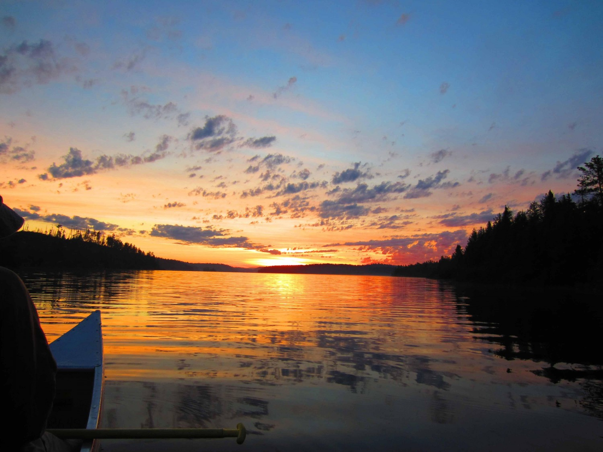
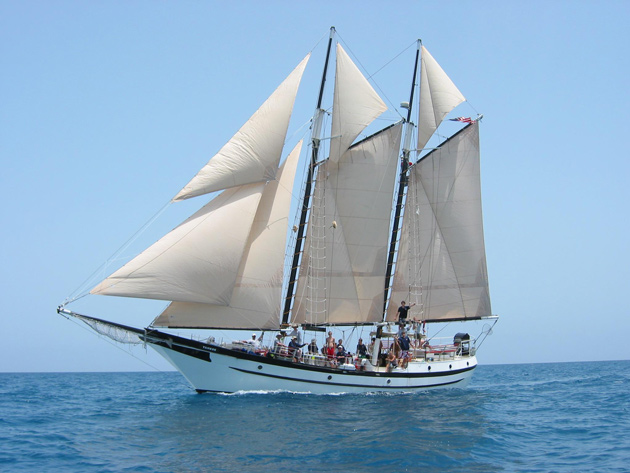
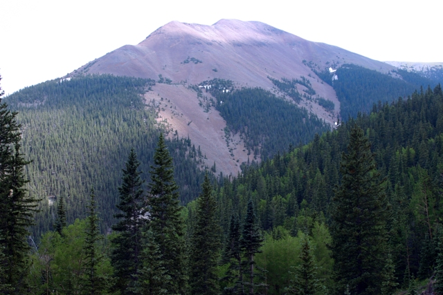

My Wilderness Adventures
Since I was young, I have always loved camping. I have lived in the city my whole life, and while I enjoy an urban atmosphere, it can get stifling. Camping is a way for me to escape the fast-paced life and return to nature. I have traveled to a number of places in my camping trips, but few compare to wilderness camping.
What is wilderness camping?
Wilderness camping, or high adventure camping, is a program in which a crew completes a trek through wilderness areas, usually for more than a week at a time. On these treks, the crew is mostly or entirely cut off from base camp or the outfitter in charge of dispatching crews. It involves physical and survival training, planning an itinerary, and preparing the proper equipment and supplies to complete the journey. Here is an overview of the wilderness camping lands I have visited. All of these areas are owned and operated by the Boy Scouts.
Northern Tier

A view of one of the many lakes in the Northern Tier lands
Northern Tier is a vast area of forests on the Minnesota-Canada border connected by a network of hundreds of lakes. I participated in the summer canoeing program twice, and once in the winter (see Okpik). The summer treks lasted about 10 days on the water, stopping on land for meals and to pitch camp at night.
Sea Base

An example of a sailboat used at Sea Base
Sea Base is a sailing progam in the Florida Keys. This trip was by far the most relaxed of the lasted six days, and we launched from the Lower Matecumbe Key. Circling south around the southernmost keys, we stopped in Key West for supplies and some Jimmy Buffett vibes! Along the way we stopped to fish, swim, or snorkel the reefs, once encountering the remains of a sunken barge.
Philmont

Mount Baldy, the highest point in Philmont
Philmont Scout Ranch is